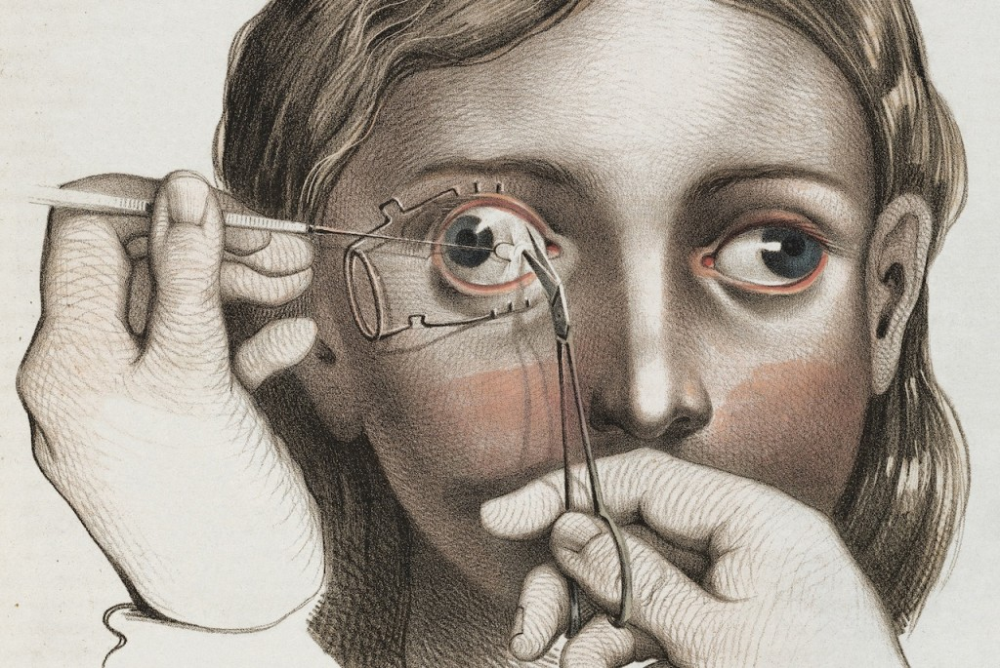

Os Açougueiros
Demorou muitos anos - mais especificamente, até o final do século 19 - o conceito de cirurgião foi devidamente desenvolvido e respeitado. Antes, eram considerados verdadeiros açougueiros pelas técnicas que usavam para manipular e tratar os pacientes. Nem todos eram educados, e a maioria era até analfabeta, porque o ingresso nas melhores universidades da época era limitado à aristocracia, para que os pobres pudessem administrar. Robert Liston se tornou um dos cirurgiões mais respeitados de Londres, simplesmente por causa de sua agilidade e destreza, ele realmente cortou parte do corpo humano. Apesar de ter se formado, ele não considerou a situação clínica, mas queria apenas aliviar a dor do paciente, pois conseguiu arrancar uma perna em cerca de 30 segundos. Na verdade, em uma de suas operações infames, ele removeu um membro tão rapidamente que apertou o próprio dedo da babá, e algumas semanas depois ele morreu de infecção.
